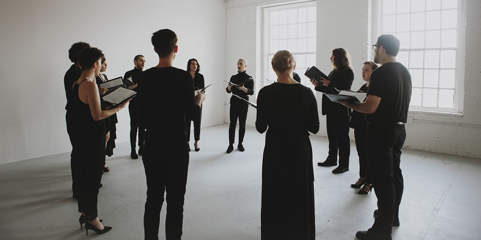

About Us
Consisting of artists from varying backgrounds, APERI ANIMAM is a newly formed mixed voice ensemble located in Milwaukee, WI. With a focus on music from the Renaissance, Middle Ages, and Early Baroque periods, the ensemble strives to recapture the undiluted purity of tone that embodies the era. Examples of repertoire include works from composers such as Thomas Tallis, William Byrd, Palestrina, and Josquin des Prez.
Translating to “open your soul”, APERI ANIMAM aims to use simple yet expressive singing to provide an environment of stimulated meditation and reflection.
Daniel Koplitz
Artistic Director, Baritone
danielkoplitz@aperianimam.com
DANIEL KOPLITZ, baritone, is a soloist, ensemble singer, and conductor based in Milwaukee. In the spring of 2018, Daniel graduated at the top of his class from the Peck School of the Arts at the University of Wisconsin-Milwaukee with a degree in vocal performance. During his studies, he had emphases in linguistics, choral conducting, and music history, but he has also furthered his education outside of academia by attending various summer programs such as the Madison Early Music Festival (2016 - 2018), Boston Early Music Academy (2017 - 2018), and the Amherst Early Music Festival’s Ensemble Singing Intensive (2018). In addition, he has begun training under the Estill Voice Model, a research-based approach to vocal pedagogy. Some of Daniel’s past ensemble experience includes participation in the UWM Concert Chorale, the Wisconsin Collegiate Honors Choir, and Vox Antiqua, while some of his past solo engagements include Autumn (The Fairy Queen), the tenor soloist in Vivaldi’s Magnificat, and Aesculapius Carboy (The Zoo).
Currently, Daniel is employed by All Saints’ Cathedral as a choral scholar, a post he has held since 2014. Here, he has been immersed in Anglican liturgical practice, and it was in this position where his love for early sacred music was fostered. Subsequently in January of 2017, he founded the vocal early music ensemble APERI ANIMAM, of which he is the artistic director. Daniel is also the director of The Choristers, the resident children and youth choir at St. Mark’s Episcopal Church. In the future, he hopes to obtain graduate and doctoral degrees in musicology.
Jackie Willis
Administrative Director, Alto
jaclynwillis@aperianimam.com
JACKIE WILLIS, alto, is both a singer and the Administrative Director of APERI ANIMAM. Since graduating, she has taken advantage of the rich artistic community in the Midwest. Jackie has performed as Hecuba (La Didone) with the Haymarket Opera Summer Course, Stag/Turtledove (Handel’s Bestiary) and Third Lady (Zie Magic Flute) with Milwaukee Opera Theatre, First Witch/Enchantress (Dido & Æneas) with UWM Opera Theatre, Suzuki (Madama Butterfly) with La Musica Lirica, and Chorus (Tales of Hoffman) in a collaboration with Milwaukee Opera Theatre and Skylight Music Theatre. In November 2017, Jackie placed third in the WI NATS Advanced Singer’s division and made her debut as Choreographer for UWM Opera Theatre’s production of Dido & Æneas in 2016. She has also enjoyed participating in the Madison Early Music Festival the last three years.
Jackie will be performing in a reboot of Zie Magic Flute in January 2019 with MOT and a staged production of Carmina Burana in March 2019 with MOT and Skylight. She is a graduate of the University of Wisconsin-Milwaukee and received her Bachelor of Arts in vocal performance in December 2016. Jackie is actively seeking a graduate program to further her interest in early music and baroque performance.
Ensemble Members
AUSTIN BARE, tenor, is a senior at UW-Milwaukee pursuing a BA in Vocal Performance. He is currently employed as a choral scholar with Wauwatosa Trinity Episcopal Church and is an avid performer in UWM’s Opera Scenes production this year. You may have seen him appear as the Sailor in Purcell’s Dido & Æneas and Don Gomez in Offenbach’s Lá Périchole- both with UWM Opera Theatre. Austin joined APERI ANIMAM in January and looks forward to continuing to perform with the group.
SOPHIA GEHO, soprano, artistically known as Xai, is a junior music student at the University of Wisconsin-Milwaukee. She is currently double majoring to obtain her BFA in Music Composition & Technology as well as her BA in Vocal Performance. Studying composition under Professor Amanda Schoofs, Sophia creates primarily experimental vocal works often including electronics and utilizing extended vocal technique. In the voice program, Sophia studies various styles and eras of repertoire under Professor Wendy Rowe. At UWM, Sophia sings for the Experimental Improvisation and Contemporary Music ensembles, Concert Chorale, and she co-directs the original co-ed a cappella group, Voca Nova. You may have seen her performing at UWM's Vocal Arts festival as well as performing various new works at the Milwaukee Composers Collective. Sophia sees every music opportunity as a chance to learn and grow, as she has found invaluable experience through her work with APERI ANIMAM.
COLIN HAN, bass-baritone, is a Milwaukee native and attends UW-Milwaukee pursuing a degree in Information Science and Technology with a Music Minor. As a student of both technology and music he has appeared in UWM’s productions of Dido & Aeneas and La Périchole as well as UWM's Opera Workshop scenes program. Colin has also performed in numerous UWM and Milwaukee choral ensembles and serves as APERI ANIMAM's website coordinator.
KAISA HERRMANN, soprano, is an undergraduate at UW Milwaukee pursuing a degree in Vocal Performance and studying under Dr. Colleen Brooks. She began a love for early music in high school through madrigal groups and is grateful that an opportunity to perform this repertoire has been brought into Milwaukee through APERI ANIMAM. Along with a passion for studying this repertoire, she also takes a great interest in music history to inform her performance. Past performance opportunities include covering the role of Belinda in Dido and Aeneas and Violetta in La Périchole at UWM, Hansel in Hansel und Gretel, and a chorus member in The Fairy Queen with South Eastern Wisconsin Performing Arts.
JENNIFER JAKUBOWSKI, mezzo-soprano, attended college at Carroll University receiving a degree in health and fitness, then attended UWM in pursuit of a Vocal Performance degree. Early Music has always been a deep love for her. She has had the privilege to sing backup for the Rolling Stones, and to travel to France and Italy, singing in Saint Marks and Notre Dame. She is honored to be in her fourth year singing with the Collegium Ladyes, and to have sung with several other talented groups in the Milwaukee area.
JOSEPH KROHLOW, bass-baritone, is a farm boy who harkens from Seymour, Wisconsin in the Fox Valley. He currently studies vocal performance and linguistics at UW–Milwaukee and intends to pursue a performing career. His interest in early music is further whettened by a nack for historical linguistics and a passion for phonetics. He recently attended the Up North Vocal Institute in Petoskey, Michigan and has undertaken such roles as the Spirit in Dido & Æneas and Don Pédro in Offenbach's La Périchole, and Figaro (scenes) in Le Nozze di Figaro—all UWM productions. This is his second term in APERI ANIMAM and he is grateful that such an amazing opportunity exists in Milwaukee. He is a student of Dr. David Hoffman.
JACK RUTTER, bass-baritone, is currently a junior in UWM's Peck School of the Arts' BFA Choral/General Music Education program, and is currently studying voice under Dr. Tanya Kruse. He works under Dr. Zachary Durlam as the undergraduate assistant director of UWM's Chamber Choir. Apart from singing in APERI ANIMAM, he freelance accompanies musicians and music directs community and high school theatre productions in the Milwaukee area. This group has provided its singers and listeners a unique perspective into an often forgotten-about style of music. Its attention to historical and musical context transforms written music into an artistic experience of tension-inducing dissonances and inevitable resolutions. Jack is privileged and honored to be a part of such a unique ensemble.
ELIZABETH SMITH, soprano, is excited to be refining her craft in the Greater Milwaukee Area after graduating with a Vocal Performance degree from the University of Wisconsin – Stevens Point. In her most recent study, Elizabeth premiered the role of “Spring” in a staged reading of American Spring, a new opera by Milwaukee-based composer Sam Mullooly. Other favorites were "Carrie Pipperidge" in Rodgers & Hammerstein's Carousel with the American Gothic Performing Arts Festival, "Pamina" in a full UWSP production of Mozart’s Die Zauberflöte, "Lucy" from Menotti's The Telephone, "Un pâtre" in Ravel's L'enfant et les Sortilèges, among others. Together with classical singing, Elizabeth finds herself interested in many other styles, from jazz and musical theater to ambient and experimental. APERI ANIMAM has brought about a new vocal adventure that Elizabeth is humbled by and grateful for.
BRETT SWEENEY, tenor, has called Milwaukee “home" for almost a decade. He received his BFA in Vocal Performance from UW-Milwaukee and has been a part of various productions, pre and post-grad. His most recent performing credits include Sweeney Todd and La Cage aux Folles, both with the Skylight Music Theatre. Brett is also a recent AmSAT certified teacher of the Alexander Technique. In addition to supporting and exploring the rich artistic communities Milwaukee has to offer, Brett has a passion for travel, enjoys sharing a nice bottle of wine, and always takes a themed party very seriously.